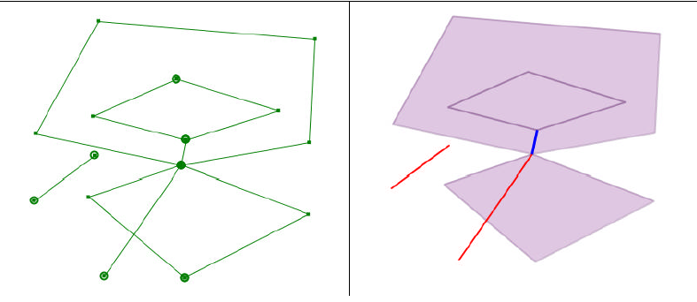

Clean
This geoprocesss build a polygon layer from those features of a line layer which close areas.
Those all lines that dont close aresas, optionally could be added to auxiliar layers (dangling lines and cutted lines).

Optionally you can specify adangling line tolerance, to filter out all those lines whose lenght would be greater than this tolerance.